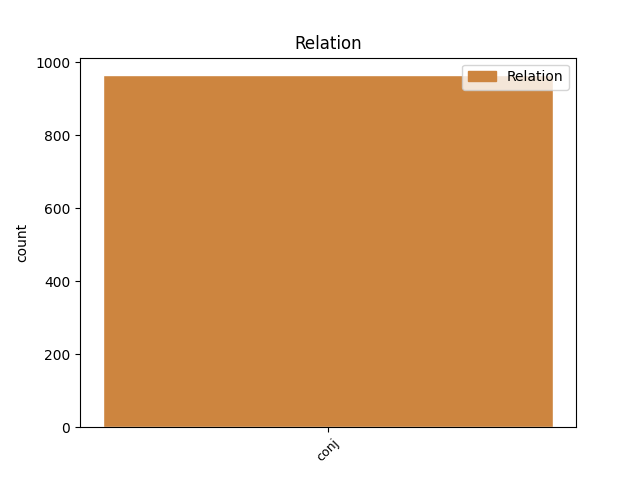
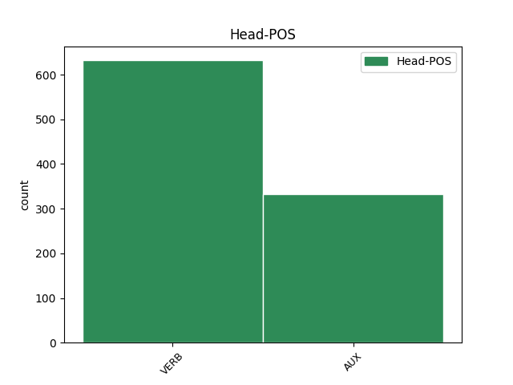
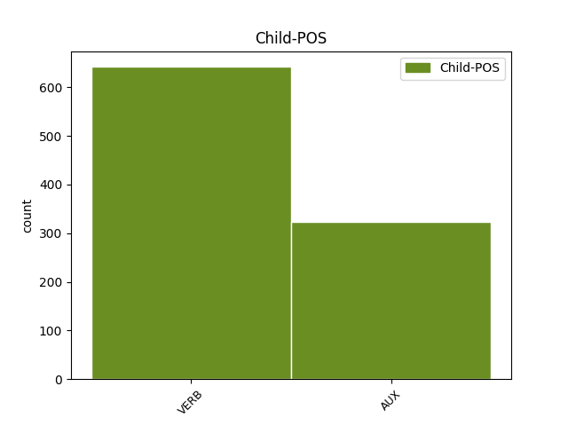

Distribution of features within this leaf



Agreement Rules sorted by frequency.
- When the dependent token is the conjunct(conj) of the head token,
1 - _ _ _ _ 0 _ _ _
2 Frifindelsen _ _ _ _ 0 _ _ _
3 er _ _ _ _ 0 _ _ _
4 på _ _ _ _ 0 _ _ _
5 ingen _ _ _ _ 0 _ _ _
6 måde _ _ _ _ 0 _ _ _
7 en _ _ _ _ 0 _ _ _
8 blåstempling _ _ _ _ 0 _ _ _
9 af _ _ _ _ 0 _ _ _
10 , _ _ _ _ 0 _ _ _
11 at _ _ _ _ 0 _ _ _
12 de _ _ _ _ 0 _ _ _
13 har have AUX _ Mood=Ind|Tense=Pres|VerbForm=Fin|Voice=Act 0 _ _ _
14 varetaget _ _ _ _ 0 _ _ _
15 deres _ _ _ _ 0 _ _ _
16 bestyrelsesarbejde _ _ _ _ 0 _ _ _
17 på _ _ _ _ 0 _ _ _
18 forbilledlig _ _ _ _ 0 _ _ _
19 vis _ _ _ _ 0 _ _ _
20 - _ _ _ _ 0 _ _ _
21 det _ _ _ _ 0 _ _ _
22 er være AUX _ Mood=Ind|Tense=Pres|VerbForm=Fin|Voice=Act 13 conj _ _
23 langt _ _ _ _ 0 _ _ _
24 fra _ _ _ _ 0 _ _ _
25 tilfældet _ _ _ _ 0 _ _ _
26 , _ _ _ _ 0 _ _ _
27 indskød _ _ _ _ 0 _ _ _
28 dommeren _ _ _ _ 0 _ _ _
29 under _ _ _ _ 0 _ _ _
30 sine _ _ _ _ 0 _ _ _
31 bemærkninger _ _ _ _ 0 _ _ _
32 til _ _ _ _ 0 _ _ _
33 dommen _ _ _ _ 0 _ _ _
34 . _ _ _ _ 0 _ _ _
Disagree Examples:
1 Så _ _ _ _ 0 _ _ _
2 enkelt _ _ _ _ 0 _ _ _
3 kan kunne AUX _ Mood=Ind|Tense=Pres|VerbForm=Fin|Voice=Act 0 _ _ _
4 Unibanks _ _ _ _ 0 _ _ _
5 problem _ _ _ _ 0 _ _ _
6 formuleres _ _ _ _ 0 _ _ _
7 , _ _ _ _ 0 _ _ _
8 og _ _ _ _ 0 _ _ _
9 i _ _ _ _ 0 _ _ _
10 et _ _ _ _ 0 _ _ _
11 forsøg _ _ _ _ 0 _ _ _
12 på _ _ _ _ 0 _ _ _
13 at _ _ _ _ 0 _ _ _
14 få _ _ _ _ 0 _ _ _
15 skabt _ _ _ _ 0 _ _ _
16 tillid _ _ _ _ 0 _ _ _
17 blev blive AUX _ Mood=Ind|Tense=Past|VerbForm=Fin|Voice=Act 3 conj _ _
18 Unibanks _ _ _ _ 0 _ _ _
19 direktør _ _ _ _ 0 _ _ _
20 , _ _ _ _ 0 _ _ _
21 52-årige _ _ _ _ 0 _ _ _
22 Steen _ _ _ _ 0 _ _ _
23 Rasborg _ _ _ _ 0 _ _ _
24 i _ _ _ _ 0 _ _ _
25 går _ _ _ _ 0 _ _ _
26 fyret _ _ _ _ 0 _ _ _
27 med _ _ _ _ 0 _ _ _
28 en _ _ _ _ 0 _ _ _
29 afskedsgave _ _ _ _ 0 _ _ _
30 på _ _ _ _ 0 _ _ _
31 ca. _ _ _ _ 0 _ _ _
32 ni _ _ _ _ 0 _ _ _
33 millioner _ _ _ _ 0 _ _ _
34 kroner _ _ _ _ 0 _ _ _
35 . _ _ _ _ 0 _ _ _
1 - _ _ _ _ 0 _ _ _
2 Og _ _ _ _ 0 _ _ _
3 det _ _ _ _ 0 _ _ _
4 er være AUX _ Mood=Ind|Tense=Pres|VerbForm=Fin|Voice=Act 0 _ _ _
5 mig _ _ _ _ 0 _ _ _
6 , _ _ _ _ 0 _ _ _
7 der _ _ _ _ 0 _ _ _
8 hedder _ _ _ _ 0 _ _ _
9 Anni _ _ _ _ 0 _ _ _
10 , _ _ _ _ 0 _ _ _
11 sagde sige VERB _ Mood=Ind|Tense=Past|VerbForm=Fin|Voice=Act 4 conj _ _
12 Anni _ _ _ _ 0 _ _ _
13 og _ _ _ _ 0 _ _ _
14 hoppede _ _ _ _ 0 _ _ _
15 og _ _ _ _ 0 _ _ _
16 dansede _ _ _ _ 0 _ _ _
17 på _ _ _ _ 0 _ _ _
18 fødderne _ _ _ _ 0 _ _ _
19 . _ _ _ _ 0 _ _ _
1 Det _ _ _ _ 0 _ _ _
2 blev blive AUX _ Mood=Ind|Tense=Past|VerbForm=Fin|Voice=Act 0 _ _ _
3 også _ _ _ _ 0 _ _ _
4 bygget _ _ _ _ 0 _ _ _
5 i _ _ _ _ 0 _ _ _
6 begyndelsen _ _ _ _ 0 _ _ _
7 af _ _ _ _ 0 _ _ _
8 tresserne _ _ _ _ 0 _ _ _
9 på _ _ _ _ 0 _ _ _
10 Aalborg _ _ _ _ 0 _ _ _
11 Værft _ _ _ _ 0 _ _ _
12 og _ _ _ _ 0 _ _ _
13 har have AUX _ Mood=Ind|Tense=Pres|VerbForm=Fin|Voice=Act 2 conj _ _
14 siden _ _ _ _ 0 _ _ _
15 sejlet _ _ _ _ 0 _ _ _
16 trofast _ _ _ _ 0 _ _ _
17 ved _ _ _ _ 0 _ _ _
18 Færøerne _ _ _ _ 0 _ _ _
19 og _ _ _ _ 0 _ _ _
20 Grønland _ _ _ _ 0 _ _ _
21 . _ _ _ _ 0 _ _ _
1 Et _ _ _ _ 0 _ _ _
2 overfald _ _ _ _ 0 _ _ _
3 , _ _ _ _ 0 _ _ _
4 der _ _ _ _ 0 _ _ _
5 var _ _ _ _ 0 _ _ _
6 så _ _ _ _ 0 _ _ _
7 voldsomt _ _ _ _ 0 _ _ _
8 , _ _ _ _ 0 _ _ _
9 at _ _ _ _ 0 _ _ _
10 han _ _ _ _ 0 _ _ _
11 sprængte sprænge VERB _ Mood=Ind|Tense=Past|VerbForm=Fin|Voice=Act 0 _ _ _
12 sin _ _ _ _ 0 _ _ _
13 trommehinde _ _ _ _ 0 _ _ _
14 og _ _ _ _ 0 _ _ _
15 nu _ _ _ _ 0 _ _ _
16 skal skulle AUX _ Mood=Ind|Tense=Pres|VerbForm=Fin|Voice=Act 11 conj _ _
17 gennemgå _ _ _ _ 0 _ _ _
18 en _ _ _ _ 0 _ _ _
19 operation _ _ _ _ 0 _ _ _
20 for _ _ _ _ 0 _ _ _
21 at _ _ _ _ 0 _ _ _
22 få _ _ _ _ 0 _ _ _
23 en _ _ _ _ 0 _ _ _
24 ny _ _ _ _ 0 _ _ _
25 . _ _ _ _ 0 _ _ _
1 Jeg _ _ _ _ 0 _ _ _
2 har have VERB _ Mood=Ind|Tense=Pres|VerbForm=Fin|Voice=Act 0 _ _ _
3 en _ _ _ _ 0 _ _ _
4 tæt _ _ _ _ 0 _ _ _
5 kontakt _ _ _ _ 0 _ _ _
6 med _ _ _ _ 0 _ _ _
7 min _ _ _ _ 0 _ _ _
8 familie _ _ _ _ 0 _ _ _
9 , _ _ _ _ 0 _ _ _
10 den _ _ _ _ 0 _ _ _
11 ville ville AUX _ Mood=Ind|Tense=Past|VerbForm=Fin|Voice=Act 2 conj _ _
12 jeg _ _ _ _ 0 _ _ _
13 ikke _ _ _ _ 0 _ _ _
14 undvære _ _ _ _ 0 _ _ _
15 . _ _ _ _ 0 _ _ _